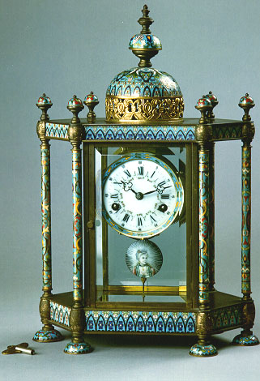

義助慰安婦
—— 李敖百件珍藏義賣藝術品（第62件）
品 名： F1. 鍍銅金琺瑯六柱庭式鐘 預估價： 100 萬 成交價： （保留） 說 明： 近代中西接觸，西方文物傳至中國，最早引起朝野注意之物，就是外國的鐘。中國古代計算時間的方法是用銅壺滴漏、日晷儀，無法很精確地計時；鐘的傳入，使中國真正認識並了解西方文化了不起之處。清朝宮殿鐘流傳下來的鐘特別多，《清宮鐘表珍藏》一書中所介紹的鐘，收的是北京故宮博物院藏品。
這一銅鍍今琺瑯六柱庭式鐘，瑞士製，有六個柱子，中間為琺瑯製，景泰藍的比例較清宮高，是西方貴族的象徵。
